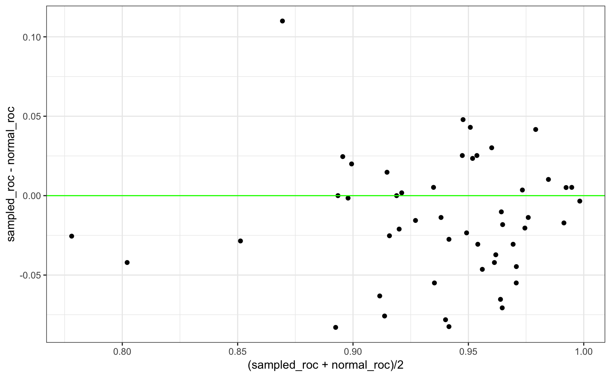
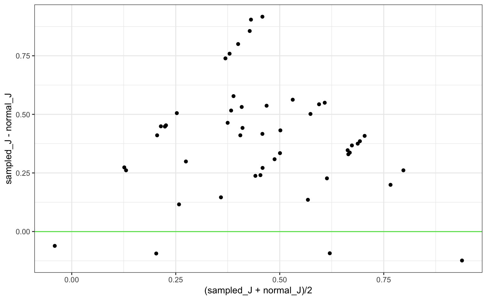
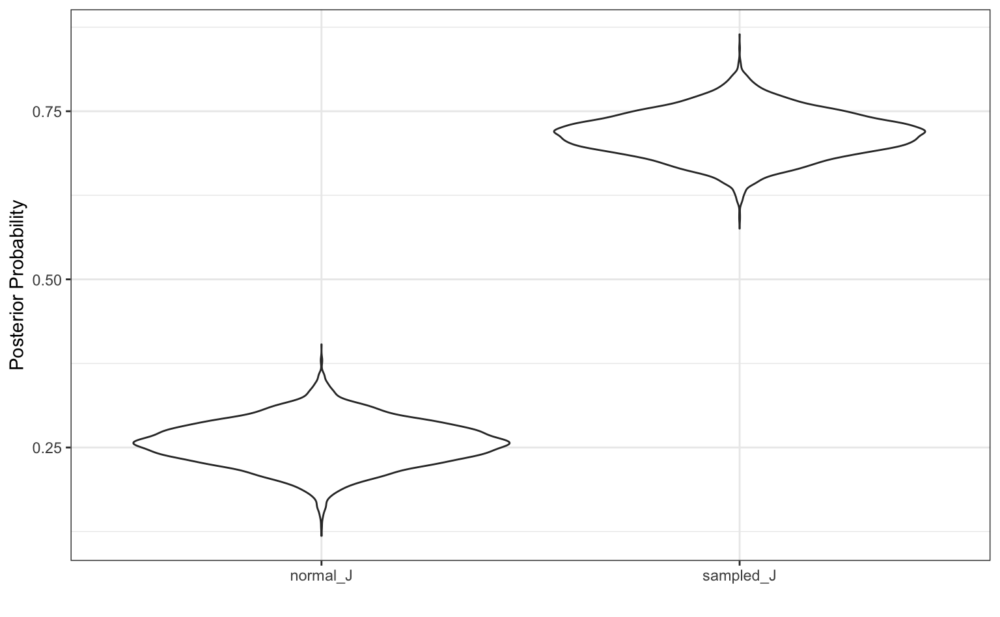

Subsampling can be a helpful approach to dealing will classification data where one or more classes occur very infrequently. Often, most models will overfit to the majority class and produce very good statistics for the class containing the frequently occurring classes while the minority classes have poor performance.
Consider a two-class problem where the first class has a very low rate of occurrence. The caret package has a function that can simulate such data:
library(caret)
set.seed(244)
imbal_data <- twoClassSim(1000, intercept = 10)
table(imbal_data$Class)
#>
#> Class1 Class2
#> 47 953If “Class1” is the event of interest, it is very likely that a classification model would be able to achieve very good specificity since almost all of the data are the second class. Sensitivity will often be poor since the models will optimize accuracy (or other loss functions) by predicting everything to be the majority class.
When there are two classes, the results is that the default probability cutoff of 50% is inappropriate; a different cutoff that is more extreme might be able to achieve good performance.
One way to alleviate this issue is to subsample the data. There are a number of ways to do this but the most simple one is to sample down the majority class data until it occurs with the same frequency as the minority class. While counterintuitive, throwing out a large percentage of the data can be effective at producing a results. In some cases, this means that the overall performance of the model is better (e.g. improved area under the ROC curve). However, subsampling almost always produces models that are better calibrated, meaning that the distributions of the class probabilities are model well behaved. As a result, the default 50% cutoff is much model likely to produce better sensitivity and specificity values than they would otherwise.
To demonstrate this, step_downsample will be used in a recipe for the simulated data. In terms of workflow:
skip argument to step_downsample is defaulted to TRUE.Here is a simple recipe:
library(recipes)
imbal_rec <- recipe(Class ~ ., data = imbal_data) %>%
step_downsample(Class)Basic cross-validation is used to resample the model:
library(rsample)
set.seed(5732)
cv_folds <- vfold_cv(imbal_data, strata = "Class", repeats = 5)An additional column is added to the data that contains the trained recipes for each resample:
library(purrr)
cv_folds <- cv_folds %>%
mutate(recipes =
map(cv_folds$splits, prepper, recipe = imbal_rec, retain = TRUE))
cv_folds$recipes[[1]]
#> Data Recipe
#>
#> Inputs:
#>
#> role #variables
#> outcome 1
#> predictor 15
#>
#> Training data contained 900 data points and no missing data.
#>
#> Operations:
#>
#> Down-sampling based on Class [trained]The model that will be used to demonstrate subsampling is quadratic discriminant analysis via the MASS package. A function will be used to train the model and to produce class probabilities as well as hard class predictions using the default 50% cutoff. When a recipe is passed to the function, down-sampling will be applied. If no recipe is given, the data are used to fit the model as-is:
library(MASS)
library(dplyr)
assess_res <- function(split, rec = NULL, ...) {
if (!is.null(rec))
mod_data <- juice(rec)
else
mod_data <- analysis(split)
mod_fit <- qda(Class ~ ., data = mod_data)
if (!is.null(rec))
eval_data <- bake(rec, assessment(split))
else
eval_data <- assessment(split)
eval_data <- eval_data
predictions <- predict(mod_fit, eval_data)
eval_data %>%
mutate(
pred = predictions$class,
prob = predictions$posterior[,1]
) %>%
dplyr::select(Class, pred, prob)
}For example:
# No subsampling
assess_res(cv_folds$splits[[1]]) %>% head
#> Class pred prob
#> 1 Class2 Class2 2.36e-07
#> 2 Class2 Class2 4.69e-06
#> 3 Class2 Class2 2.21e-04
#> 4 Class2 Class2 1.20e-03
#> 5 Class1 Class2 2.78e-01
#> 6 Class2 Class2 6.13e-11
# With downsampling:
assess_res(cv_folds$splits[[1]], cv_folds$recipes[[1]]) %>% head
#> # A tibble: 6 x 3
#> Class pred prob
#> <fct> <fct> <dbl>
#> 1 Class2 Class2 0.0933
#> 2 Class2 Class2 0.000340
#> 3 Class2 Class2 0.0255
#> 4 Class2 Class2 0.00472
#> 5 Class1 Class1 1.000
#> 6 Class2 Class2 0.0000000371To measure model effectiveness, two metrics are used:
sensitivity + specificity - 1. Values near one are once again best.If a model is poorly calibrated, the ROC curve value might not show diminished performance. However, the J index would be lower for models with pathological distributions for the class probabilities. The yardstick package will be used to compute these metrics.
Now, we train the models and generate the predictions. These are stored in list columns where each list element is a data frame of the predictions on the assessment data:
cv_folds <- cv_folds %>%
mutate(
sampled_pred = map2(cv_folds$splits, cv_folds$recipes, assess_res),
normal_pred = map(cv_folds$splits, assess_res)
)
cv_folds
#> # 10-fold cross-validation repeated 5 times using stratification
#> # A tibble: 50 x 6
#> splits id id2 recipes sampled_pred normal_pred
#> * <list> <chr> <chr> <list> <list> <list>
#> 1 <S3: rsplit> Repeat1 Fold01 <S3: recipe> <tibble [100 × 3]> <data.fram…
#> 2 <S3: rsplit> Repeat1 Fold02 <S3: recipe> <tibble [100 × 3]> <data.fram…
#> 3 <S3: rsplit> Repeat1 Fold03 <S3: recipe> <tibble [100 × 3]> <data.fram…
#> 4 <S3: rsplit> Repeat1 Fold04 <S3: recipe> <tibble [100 × 3]> <data.fram…
#> 5 <S3: rsplit> Repeat1 Fold05 <S3: recipe> <tibble [100 × 3]> <data.fram…
#> 6 <S3: rsplit> Repeat1 Fold06 <S3: recipe> <tibble [100 × 3]> <data.fram…
#> 7 <S3: rsplit> Repeat1 Fold07 <S3: recipe> <tibble [100 × 3]> <data.fram…
#> 8 <S3: rsplit> Repeat1 Fold08 <S3: recipe> <tibble [100 × 3]> <data.fram…
#> 9 <S3: rsplit> Repeat1 Fold09 <S3: recipe> <tibble [100 × 3]> <data.fram…
#> 10 <S3: rsplit> Repeat1 Fold10 <S3: recipe> <tibble [100 × 3]> <data.fram…
#> # ... with 40 more rowsNow, the performance metrics are computed:
library(yardstick)
cv_folds <- cv_folds %>%
mutate(
sampled_roc = map_dbl(cv_folds$sampled_pred, roc_auc, truth = "Class", estimate = "prob"),
normal_roc = map_dbl(cv_folds$normal_pred, roc_auc, truth = "Class", estimate = "prob"),
sampled_J = map_dbl(cv_folds$sampled_pred, j_index, truth = "Class", estimate = "pred"),
normal_J = map_dbl(cv_folds$normal_pred, j_index, truth = "Class", estimate = "pred")
)What do the ROC values look like? A Bland-Altman plot can be used to show the differences in the results over the range of results:
library(ggplot2)
ggplot(cv_folds,
aes(x = (sampled_roc + normal_roc)/2,
y = sampled_roc - normal_roc)) +
geom_point() +
geom_hline(yintercept = 0, col = "green")
There doesn’t appear that subsampling had much of an effect on this metric. The average difference is -0.011, which is fairly small.
For the J statistic, the results show a different story:
ggplot(cv_folds,
aes(x = (sampled_J + normal_J)/2,
y = sampled_J - normal_J)) +
geom_point() +
geom_hline(yintercept = 0, col = "green")
Almost all of the differences area greater than zero. We can use tidyposterior to do a more formal analysis:
library(tidyposterior)
# Remove all columns except the resample info and the J indices,
# then fit the Bayesian model
j_mod <- cv_folds %>%
dplyr::select(-recipes, -matches("pred$"), -matches("roc$")) %>%
perf_mod(seed = 62378, iter = 5000)
#>
#> SAMPLING FOR MODEL 'continuous' NOW (CHAIN 1).
#>
#> Gradient evaluation took 0.000153 seconds
#> 1000 transitions using 10 leapfrog steps per transition would take 1.53 seconds.
#> Adjust your expectations accordingly!
#>
#>
#> Iteration: 1 / 5000 [ 0%] (Warmup)
#> Iteration: 500 / 5000 [ 10%] (Warmup)
#> Iteration: 1000 / 5000 [ 20%] (Warmup)
#> Iteration: 1500 / 5000 [ 30%] (Warmup)
#> Iteration: 2000 / 5000 [ 40%] (Warmup)
#> Iteration: 2500 / 5000 [ 50%] (Warmup)
#> Iteration: 2501 / 5000 [ 50%] (Sampling)
#> Iteration: 3000 / 5000 [ 60%] (Sampling)
#> Iteration: 3500 / 5000 [ 70%] (Sampling)
#> Iteration: 4000 / 5000 [ 80%] (Sampling)
#> Iteration: 4500 / 5000 [ 90%] (Sampling)
#> Iteration: 5000 / 5000 [100%] (Sampling)
#>
#> Elapsed Time: 1.91028 seconds (Warm-up)
#> 1.52779 seconds (Sampling)
#> 3.43807 seconds (Total)
#>
#>
#> SAMPLING FOR MODEL 'continuous' NOW (CHAIN 2).
#>
#> Gradient evaluation took 6.6e-05 seconds
#> 1000 transitions using 10 leapfrog steps per transition would take 0.66 seconds.
#> Adjust your expectations accordingly!
#>
#>
#> Iteration: 1 / 5000 [ 0%] (Warmup)
#> Iteration: 500 / 5000 [ 10%] (Warmup)
#> Iteration: 1000 / 5000 [ 20%] (Warmup)
#> Iteration: 1500 / 5000 [ 30%] (Warmup)
#> Iteration: 2000 / 5000 [ 40%] (Warmup)
#> Iteration: 2500 / 5000 [ 50%] (Warmup)
#> Iteration: 2501 / 5000 [ 50%] (Sampling)
#> Iteration: 3000 / 5000 [ 60%] (Sampling)
#> Iteration: 3500 / 5000 [ 70%] (Sampling)
#> Iteration: 4000 / 5000 [ 80%] (Sampling)
#> Iteration: 4500 / 5000 [ 90%] (Sampling)
#> Iteration: 5000 / 5000 [100%] (Sampling)
#>
#> Elapsed Time: 1.7676 seconds (Warm-up)
#> 1.52713 seconds (Sampling)
#> 3.29473 seconds (Total)
#>
#>
#> SAMPLING FOR MODEL 'continuous' NOW (CHAIN 3).
#>
#> Gradient evaluation took 4.2e-05 seconds
#> 1000 transitions using 10 leapfrog steps per transition would take 0.42 seconds.
#> Adjust your expectations accordingly!
#>
#>
#> Iteration: 1 / 5000 [ 0%] (Warmup)
#> Iteration: 500 / 5000 [ 10%] (Warmup)
#> Iteration: 1000 / 5000 [ 20%] (Warmup)
#> Iteration: 1500 / 5000 [ 30%] (Warmup)
#> Iteration: 2000 / 5000 [ 40%] (Warmup)
#> Iteration: 2500 / 5000 [ 50%] (Warmup)
#> Iteration: 2501 / 5000 [ 50%] (Sampling)
#> Iteration: 3000 / 5000 [ 60%] (Sampling)
#> Iteration: 3500 / 5000 [ 70%] (Sampling)
#> Iteration: 4000 / 5000 [ 80%] (Sampling)
#> Iteration: 4500 / 5000 [ 90%] (Sampling)
#> Iteration: 5000 / 5000 [100%] (Sampling)
#>
#> Elapsed Time: 1.89605 seconds (Warm-up)
#> 1.54538 seconds (Sampling)
#> 3.44143 seconds (Total)
#>
#>
#> SAMPLING FOR MODEL 'continuous' NOW (CHAIN 4).
#>
#> Gradient evaluation took 6.6e-05 seconds
#> 1000 transitions using 10 leapfrog steps per transition would take 0.66 seconds.
#> Adjust your expectations accordingly!
#>
#>
#> Iteration: 1 / 5000 [ 0%] (Warmup)
#> Iteration: 500 / 5000 [ 10%] (Warmup)
#> Iteration: 1000 / 5000 [ 20%] (Warmup)
#> Iteration: 1500 / 5000 [ 30%] (Warmup)
#> Iteration: 2000 / 5000 [ 40%] (Warmup)
#> Iteration: 2500 / 5000 [ 50%] (Warmup)
#> Iteration: 2501 / 5000 [ 50%] (Sampling)
#> Iteration: 3000 / 5000 [ 60%] (Sampling)
#> Iteration: 3500 / 5000 [ 70%] (Sampling)
#> Iteration: 4000 / 5000 [ 80%] (Sampling)
#> Iteration: 4500 / 5000 [ 90%] (Sampling)
#> Iteration: 5000 / 5000 [100%] (Sampling)
#>
#> Elapsed Time: 1.77564 seconds (Warm-up)
#> 1.6118 seconds (Sampling)
#> 3.38744 seconds (Total)A simple plot of the posterior distributions of the J indices for each model shows that there is a real difference; subsampling the data prior to modeling produced better calibrated models:
ggplot(tidy(j_mod, seed = 234))